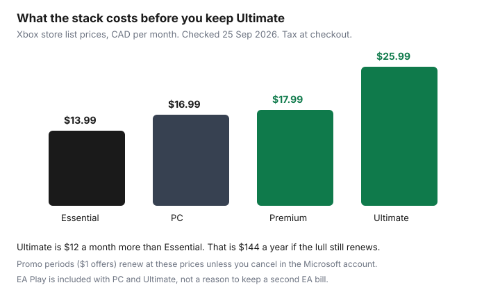

Subscriptions · Canada
How to Cancel Xbox Game Pass in Canada and Stop Auto-Renew Surprises
Game Pass feels cheap until a quiet month still bills. The lull is the point of the charge: the subscription is on by default, and a redeemed code or a one-dollar intro does not turn the next month off. Cancel, or turn recurring billing off, in the Microsoft account that pays, before the next billing date on that page. The console library and the PC library are different products stacked under similar names. Knowing which row is yours is the whole saving.
Put the renewal on the subscription sheet with the other household renewals. A code that arrived as a gift is still a trial if a card is attached. The trial checklist is the day-zero habit. This page is the Game Pass decision after you are already paying.
Disclosure: This guide has no natural affiliate offer. Saving Optimizer does not sell subscriptions and does not claim a Microsoft, Xbox, or EA partnership. Education only. The price on your Microsoft Services page is the price.
Key takeaways
- Stop the next charge in the Microsoft account at account.microsoft.com/services, or on the Xbox console, before the next billing date. Recurring billing is on unless you turned it off.
- Xbox store list prices checked 25 Sep 2026, CAD per month: Essential $13.99, PC Game Pass $16.99, Premium $17.99, Ultimate $25.99. A $1 intro renews at the regular price unless you cancel.
- Ultimate is $12 a month more than Essential, about $144 a year before tax, if you are not using day-one games, EA Play, Ubisoft+ Classics, Fortnite Crew, or the longer cloud allowance.
- Turning recurring billing off keeps the time you already paid for, including a redeemed code, until the end date on the Services page. It does not delete that time.
- EA Play included with PC Game Pass or Ultimate is not a second subscription. An EA account you opened yourself can still bill. Check both places.
- Screenshot the confirmation and the next billing line. A charge after “recurring billing off” is a support request with that image, not a new plan you meant to start.
Microsoft account then Subscriptions: cancel or turn off recurring billing
Sign in to the Microsoft account that receives the Game Pass email. Open Services at account.microsoft.com/services. Xbox’s own Game Pass page, read 25 Sep 2026, says recurring billing is switched on by default and that you stop the next charge by cancelling in that Microsoft account or on the Xbox console before the next billing date. The same page says charges can increase on at least 30 days’ notice under the Microsoft Store terms of sale. The button names vary. You are looking for the Game Pass row, then cancel or turn off recurring billing, then a confirmation that names an end date.
On the console, the same control lives in Settings, then Account, then Subscriptions, on the profile that pays. If a child profile is the one that plays and a parent profile is the one that pays, cancel on the paying profile. Cancelling on the wrong profile changes nothing on the card. If the charge on the statement says Apple, Google, or a retailer rather than Microsoft, the Microsoft page will not stop it. Cancel where the receipt was issued. That split is the same rule as the trial checklist.
Xbox’s Game Pass FAQ, on the page used 25 Sep 2026, also describes a narrow refund: if recurring billing charged you and you did not want that charge, you can ask for a refund of the most recent recurring payment if you cancel within 30 days after that payment. The page says this refund right is limited to one time per Microsoft account, per subscription product. It is not a yearly undo button. A code you redeemed on purpose is not that refund. Ask only when the charge itself was the surprise, and keep the case number.
Console vs PC vs Ultimate stack—know what you are paying for
The marketing page hides the stickers behind a sign-in. The Xbox store product pages, checked 25 Sep 2026, print them in CAD. Use the row that matches how the household actually plays, not the row with the longest feature list.
| Plan | List price | What the store page says you are buying |
|---|---|---|
| Essential | $13.99 | About 50 games, online console multiplayer, a short cloud allowance. Store trials showed $1 for the first month, then $13.99. |
| PC Game Pass | $16.99 | About 300 PC games, day-one PC releases, EA Play. The Game Pass page says cloud play is not included with PC Game Pass. |
| Premium | $17.99 | About 200 games on console, PC, and other devices, online console multiplayer, a larger cloud allowance. New Xbox-published games within a year of launch, with Call of Duty excluded on the footnote we read. |
| Ultimate | $25.99 | About 400 games, day-one releases, EA Play, Fortnite Crew, Ubisoft+ Classics, the longest cloud allowance on the page, online console multiplayer. |

Write one sentence next to the row: who played in the last 30 days, and on which screen. A console household that only needs online multiplayer for games they already own is the Essential case. A PC household that wants the PC library and EA Play is the PC Game Pass case, and it does not need Ultimate’s console multiplayer. A household that plays on both screens, and actually starts the new releases, is the Ultimate case. “We might” is how Ultimate survives a three-month lull. The 30-day use test applies here the same way it applies to Netflix.
Redeemed codes and remaining time after cancel
A code from a retailer, a points redemption, or a holiday card adds time to the subscription. Turning recurring billing off does not burn that time. Xbox’s page says you cancel before the next billing date so you are not charged again. The current period runs until the end date the Services page shows. If you redeemed three months and the end date is three months out with no dollar amount on the next charge, the code is doing what you wanted. If a dollar amount is still sitting on the next billing date, recurring billing is still on, code or not.
Stacking a code on top of an active Ultimate plan extends Ultimate. It does not silently downgrade you to Essential when the code ends. When the prepaid time runs out, the plan that was set to renew is the plan that bills, at the then-current price. Read the plan name on the end date, not the name on the code email from six months ago. If you want the code’s months and then a stop, turn recurring billing off now, while you are looking at the screen, and screenshot the end date. Future you will not remember whether the code included a renewal.
Do not buy another code “to pause.” A code extends a paid period. A pause you actually want is recurring billing off, and a rejoin later at whatever the store charges then. Microsoft says it will notify you before a price change. The notification is not a cancel. The Services page is the cancel.
EA Play and perk add-ons that may bill separately
The Ultimate store page and the PC Game Pass page both include EA Play in the membership. Essential and Premium, on the bullets we read 25 Sep 2026, do not. If you moved from a standalone EA Play subscription to Ultimate or PC Game Pass, the old EA row can keep billing. Open account.microsoft.com/services and look for a second line: EA Play, Ubisoft+, or another perk name that is not the Game Pass row. Then open the EA account itself if you ever paid EA directly. A perk that is included is not a second invoice. A perk you subscribed to on your own is.
Fortnite Crew is listed as part of Ultimate, including V-Bucks on the store description. If a child already had a Fortnite subscription on a different store account, Ultimate does not automatically cancel that other store. The same is true of any “bonus” that was a separate trial. Search the card statement for EA, Ubisoft, Epic, and Microsoft. One Game Pass charge plus a second gaming charge in the same month is the duplicate. Cancel the duplicate in the account that bills it, and leave the included perk alone.
Cloud gaming hours are a feature of the Game Pass tier, not a second subscription, and the Game Pass page says monthly cloud limits vary by plan and are not included with PC Game Pass. If nobody in the house streams games, do not pay Ultimate for a cloud allowance you will not open. If someone does stream, the limit on your tier is the limit. Buying a second cloud product on top is a different bill. Read it before you add it.
When to downgrade instead of full cancel
Full cancel is right when nobody has launched a Game Pass game in 30 days and the owned-game multiplayer the household still plays does not need a paid online tier. Downgrade is right when one slice of the stack is still used. Change the plan in the same Microsoft Services list, and read the screen that says when the new price starts and whether you keep the current period. Do not assume a downgrade refunds the difference. If the screen keeps you on Ultimate until the period ends and then drops the price, that is the deal. If it charges today, compare that charge with simply finishing the month and cancelling.
- Keep console multiplayer, drop the catalogue. Essential at $13.99 is the smaller product. You lose day-one releases and the longer library. You keep online console multiplayer if that is what the store row still includes when you switch.
- PC only. PC Game Pass at $16.99 includes the PC library and EA Play. It is the wrong plan if the only device is a console.
- Both screens, but not the new releases. Premium at $17.99 sits between Essential and Ultimate. Read the “within 12 months, excludes Call of Duty” footnote before you treat it as Ultimate without the name.
- Ultimate only while a named game is in the library. Join or upgrade for that game, finish it, then downgrade or cancel before the next date. “The library might add something” is not a named game.
A downgrade still needs the confirmation email and a diary line. The statement hunt is how you check, a month later, that the old price did not return.
Confirm email and next billing date screenshot
Before you close the tab, you want three things in one folder: the confirmation email, a screenshot of the Services row showing recurring billing off or the new plan name, and the next billing date or the end date with no upcoming charge. If the email and the screenshot disagree, believe the Services page and write to Microsoft support the same day with both images. Do not wait for the card statement to referee them.
Put that end date on the shared household calendar seven days early, the same lead the audit guide uses for annual charges. Game Pass is often monthly, so the useful reminder is the date you promised yourself you would re-check the 30-day play test, not a vague “sometime in the fall.” If you rejoin later for one release, treat it as a new row with a new end date. The old screenshot does not cover the new subscription.
Sources & date stamps
- Xbox Game Pass page, xbox.com/en-CA/xbox-game-pass, used 25 Sep 2026: recurring billing on by default; cancel in the Microsoft account (account.microsoft.com/services) or on the console before the next billing date; at least 30 days’ notice of a price increase under the Store terms; one-time refund of the most recent recurring charge if you cancel within 30 days of that payment, once per account per product; cloud limits vary by plan and are not included with PC Game Pass.
- Xbox store product pages, checked 25 Sep 2026: Essential $13.99/month after a $1 first-month offer on the page we loaded; Premium $17.99/month after $1 for 14 days; PC Game Pass $16.99/month; Ultimate $25.99/month. Ultimate and PC include EA Play. Ultimate also lists Fortnite Crew and Ubisoft+ Classics. Catalogue sizes and exclusions are the store’s, and they change.
- The $12 a month and $144 a year gap between Ultimate and Essential is arithmetic on those list prices, before tax. It is not your invoice.
Frequently asked questions
I turned off recurring billing. Do I lose the months left on a code?
No. Xbox’s Game Pass page says cancel before the next billing date so you are not charged again. Time you already paid for, including a redeemed code, runs until the end date on the Microsoft Services page. If a dollar amount is still on that next date, recurring billing is still on.
Essential is $13.99 and Ultimate is $25.99. When is Ultimate the right plan?
When someone is actually playing on console and PC and using the day-one library, EA Play, or the longer cloud allowance. Those are Xbox store list prices checked 25 Sep 2026, before tax. If the last 30 days were only console multiplayer on games you own, Essential is the smaller product. If nobody played, cancel.
Does Ultimate include EA Play, or will EA still charge me?
The Ultimate and PC Game Pass store pages include EA Play. A separate EA subscription you started yourself can still bill. Check Microsoft Services for a second row, and the EA account if you ever paid EA directly.
I was charged after a $1 trial. Can I get it back?
Xbox’s page, used 25 Sep 2026, says a refund of the most recent recurring charge is available if you cancel within 30 days of that payment, once per Microsoft account per subscription product. It is not a refund you can use every month. A code you meant to redeem is not that case.
Where do I screenshot the proof?
The confirmation email, the Services row showing recurring billing off or the new plan, and the end date with no upcoming charge. If the email and the page disagree, trust the Services page and contact Microsoft the same day.